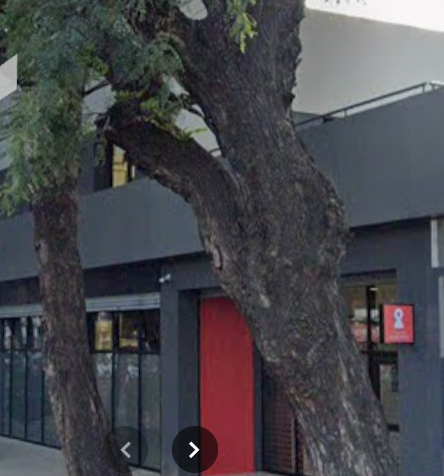
🖼️ Fotografías
Imágenes de nuestra comunidad.
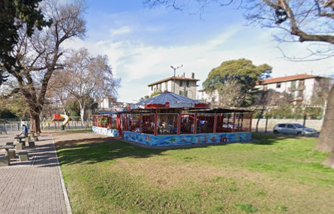
Parque Los Andes
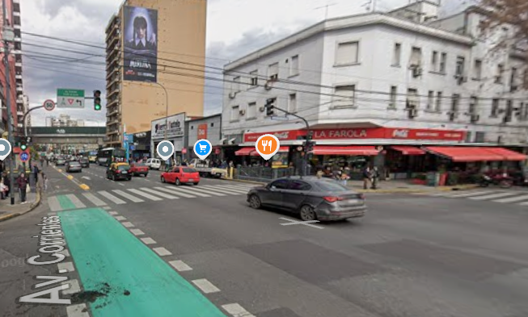
Estación Dorrego - Subte B
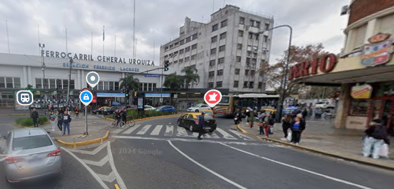
Estación Lacroze - Tren Urquiza - Subte B
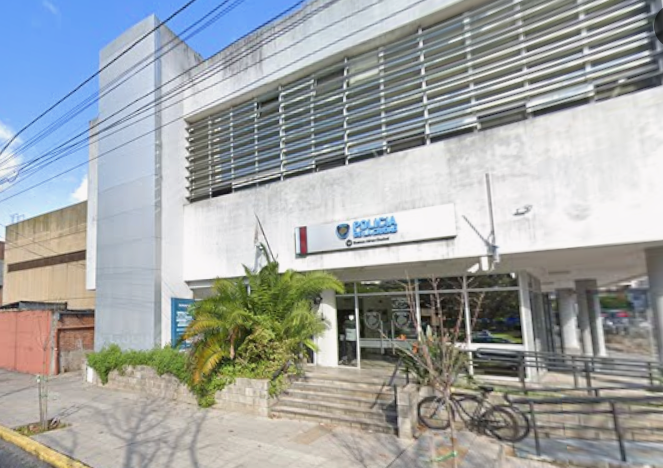
Comisaría
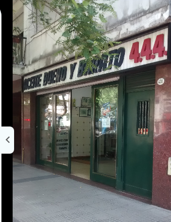
Forest 444 - Aceites
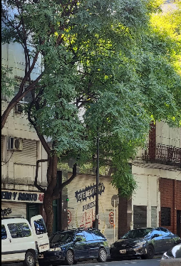
Av. Forest
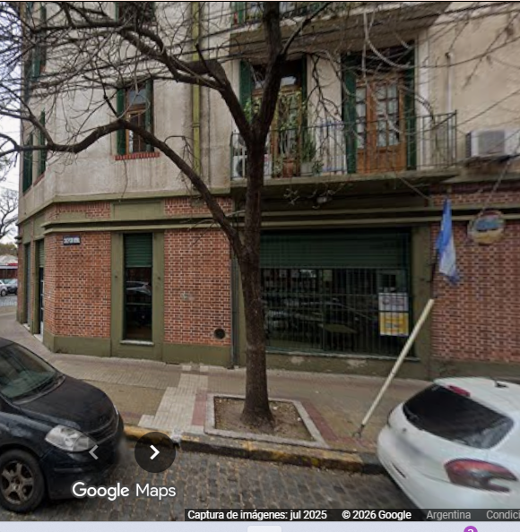
Biblioteca B. F. Moreno
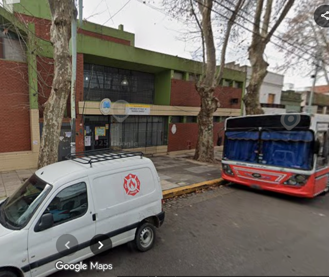
Escuela Primaria Nº 1
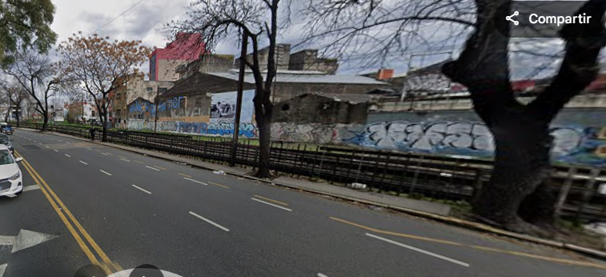
Av. Guzmán - Av. Elcano - Av. Triunvirato
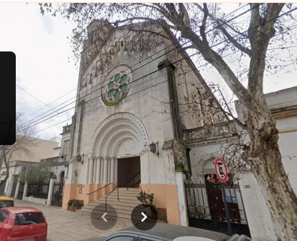
Parroquia Todos los Santos y Ánimas
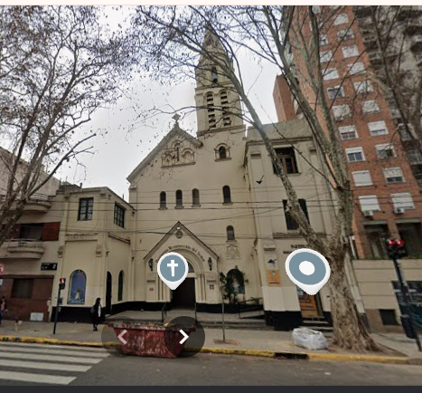
Parroquia Resurrección del Señor
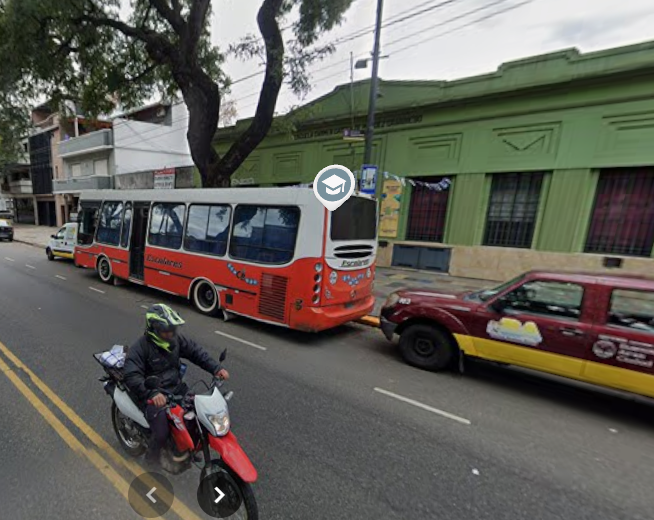
Escuela Primaria Nº 8
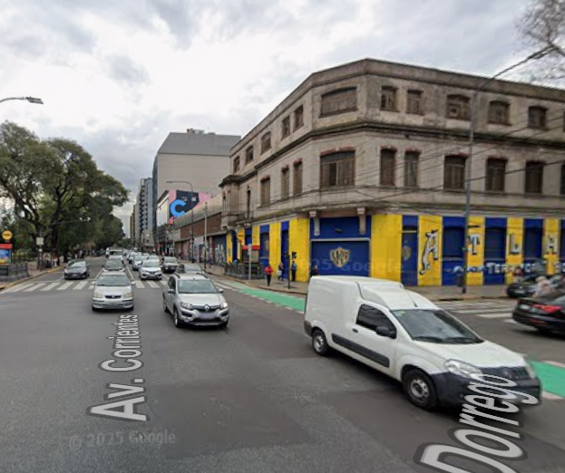
Av. Corrientes y Av. Dorrego
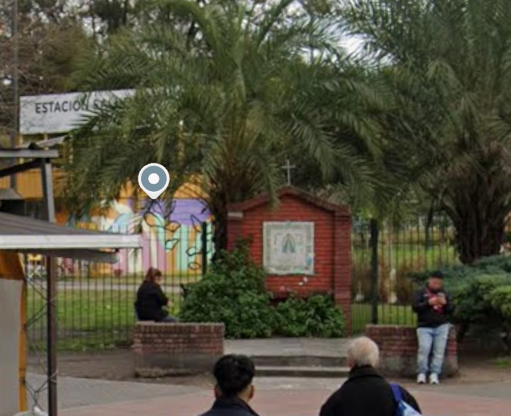
Parque Los Andes
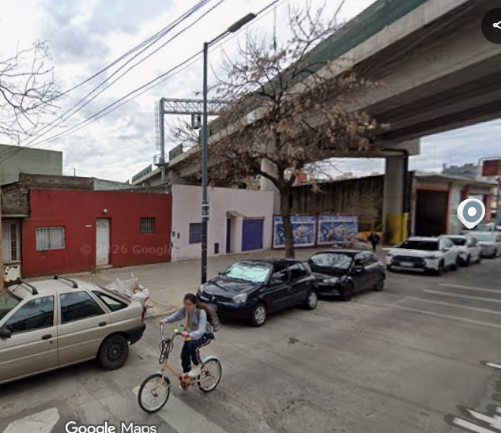
Calle Iturri (cruce Av. Dorrego)
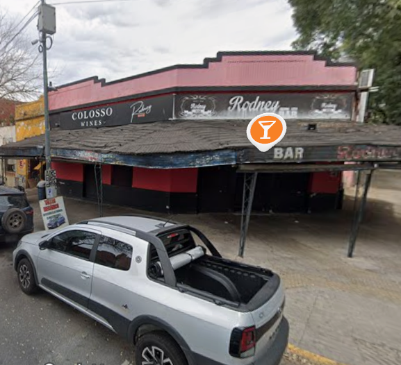
Bar de la calle Rodney (y Av. J. Newbery)
📍 Ubicación del barrio
Consultá el mapa y abrí la ubicación en Google Maps para obtener indicaciones.
🎬 Videos
Elegí reproducir cada video con sus controles.